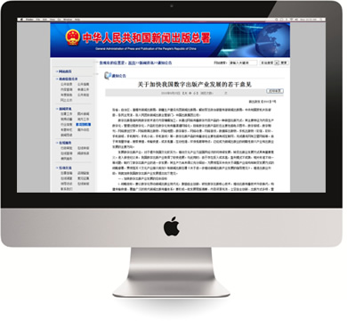

1）新闻出版总署2012年02月27日下发 《关于加快出版传媒集团改革发展的指导意见》，提出国家将大力支持出版传媒集团实施数字化战略， 加快发展有声阅读、 电子书、 数字报等；支持出版传媒集团发展以网络出版、 手机出版、 云出版等为代表的出版新业态；
2）《指导意见》共分为8个部分32条。 《指导意见》 指出进一步深化出版传媒集团体制改革， 鼓励出版传媒集团通过整合报纸、期刊、图书、音像制品、电子出版物、数字出版业务和出版、印刷复制、发行等资源， 实现多媒体、 全产业链发展；鼓励出版传媒集团实现跨地区发展、跨行业发展。摘自：新闻出版总署以新出政发〔2012〕3号印发 《关于加快出版传媒集团改革发展的指导意见》。
摘自：新闻出版总署以新出政发【2012】3号印发 《关于加快出版传媒集团改革发展的指导意见》。 查看详细数字出版是指利用数字技术进行内容编辑加工，并通过网络和移动互联网传播数字内容产品的一种新型出版方式，其主要特征为内容生产数字化、管理过程数字化、产品形态数字化和传播渠道网络化。目前数字出版产品形态主要包括电子图书、数字报纸、数字期刊、网络原创文学、网络教育出版物等。数字出版产品的传播途径主要包括有线互联网、无线通讯网和卫星网络等。由于其海量存储、搜索便捷、传输快速、成本低廉、互动性强、环保低碳等特点，已经成为新闻出版业的战略性新兴产业和出版业发展的主要方向。
1.战略目标
要以数字化带动新闻出版业现代化，推动出版传播技术升级换代，构建传输快捷、覆盖广泛的现代新闻出版传播体系；要切实从社会需求出发，将优质内容与数字技术紧密结合、 打造多方共赢的数字出版产业发展新格局，把数字出版产业打造成新闻出版支柱产业。
2.发展指标
到“十二五”末，我国数字出版总产值力争达到新闻出版产业总产值25%， 整体规模居于世界领先水平。到2020年，传统出版单位基本完成数字化转型，其数字化产品和服务的运营份额在总份额中占有明显优势。
1.加快推动传统出版单位数字化转型
加快书报刊出版单位采用新技术和现代生产方式改造传统出版流程；高度重视出版资源数字化工作，鼓励传统出版单位开展网络出版业务；积极运用新媒体、 新技术加速产业升级，进行全方位合作，拓展新业态。
2.加快推动传统印刷复制企业数字化改造
推动传统印刷复制企业积极采用数字和网络技术，大力发展数字印刷，提高对消费者多样化、个性化需求的服务供给能力。
（摘自中华人民共和国新闻出版总署---通知公告） 查看详细